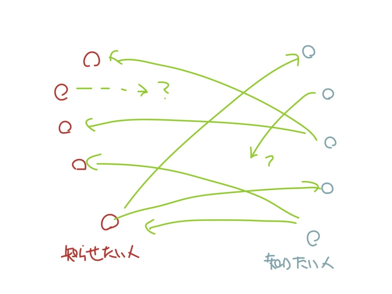
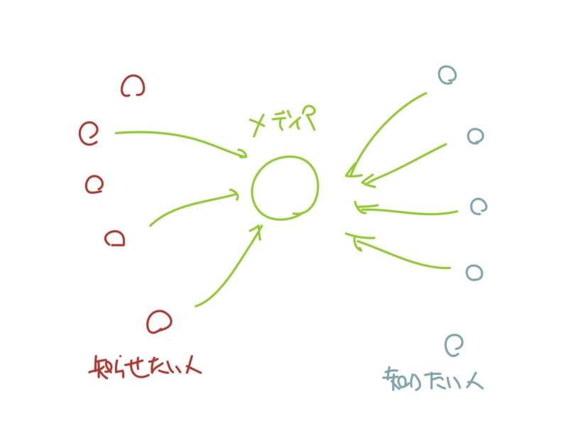
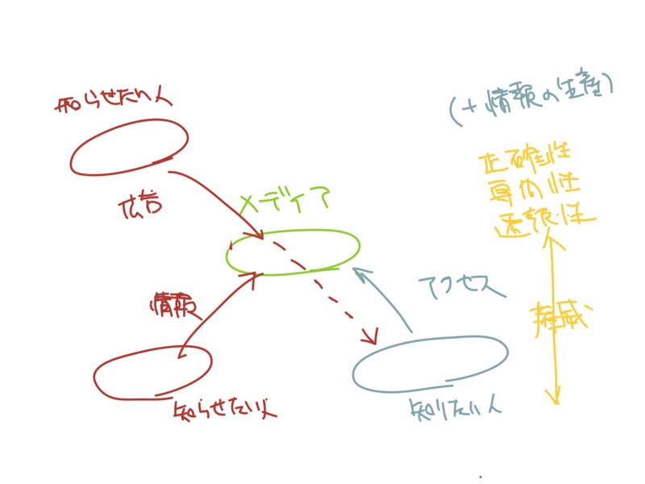
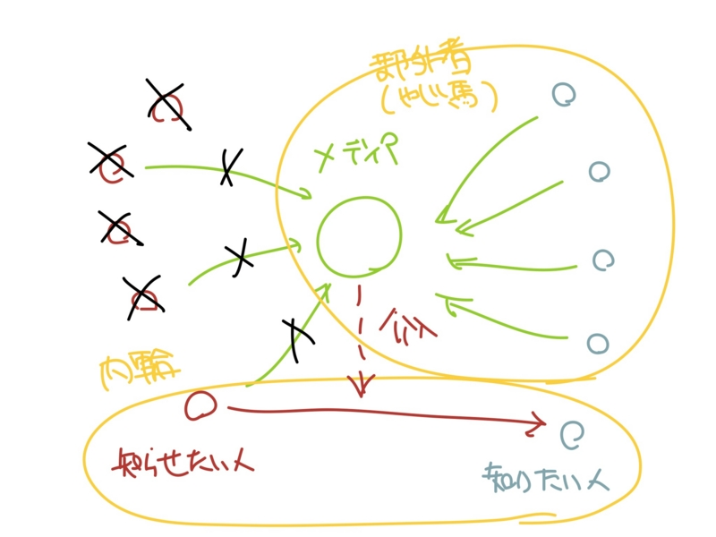

メディアとは ―― テロ被害者の実名報道について、そろそろ一言言っておくか。
公開日：
まず初めに断わっておくけど、自分は“メディア学”的なものはまったく学んだこととがないので、結構適当なことを言っている。
メディアって？
まず、メディアとはなんなのかってところから。
ここでは“原初状態アプローチ”をとってみようかな。“原初状態アプローチ”というのは、ある機構（ここではメディア）が存在しない、本来の・自然なあり方を仮定して、そこで発生する問題を解決するためにその機構が生まれたのだ、と論ずるスタイル。俺が勝手に名前を付けた*1。

まず、メディアのない世界を想像しよう。メディアがないという状態には、“耳の早い人”（速報者）だの“主婦の井戸端会議”（情報伝達手段）だの“村の長老”（情報アーカイブ）だのという存在がいないということも含まれる。
この世界では、“知らせたい人”と“知りたい人”が「孤立して」存在している。
ちなみに、“知らせたい人”と“知りたい人”は「役割」に過ぎず、特定の個人を指すわけではない。各々は、その時々に応じて、「役割」を演ずる。というよりむしろ、一つの個人に二つの役割が同居していることの方が自然だ。なぜなら、情報の“交換”は「あれを教える代わりにこれを教えてあげる」という形態をとることが多いのだから。『互いが互いに商人』*2というやつだね。「孤立」しつつ「同居」しているというのは一見矛盾だけれど、ここで問題にしているのはあくまで抽象化した「役割」の話だってことで。
さて。要するにこの世界では、“知らせたい人”と“知りたい人”が、それぞれ独立して行動し、自分の求める相手を、だれにも頼らずに独力で求め、あてどなく彷徨っているというわけだ。
交通の混乱が起こるのは火を見るよりも明らかだろう。需要と共有のミスマッチも甚だしく、とても効率的なあり方であるとはいえない。

そこでメディアさまの登場ですよ。
誰かが媒介したり、特定の場が提供されれば、情報はそこに集積される。もはや、彷徨う必要はない。そこに行けば、得られるのだから。かくして、“欲望の二重の一致”は解決される。
ちょっと経済学をかじった人ならば、このロジックに見覚えがあるはず。そう、“貨幣となはにか”を説明するロジック！ 貨幣もメディアも媒介（文字通りだな！）なのだから、同じロジックが使えるよね*3。

貨幣が権威によって裏付けられているように、メディアも権威――みんなが信じているからみんな信じるべき――によって裏付けられている。その根拠は正確性であったり、専門性であったり、速報性であったりするのだけど、これはザックリいうと“そこにいけば質的・量的にすぐれた知識が得られるという期待・信頼”だ。“一般人”からお金をとれるのも、この権威があればこそ。なので、メディアは知識の媒介でお金をもらっても、知的レベルの高低差を損なうようなことはしてはいけない。いつか食いっぱぐれる。
ほかにも、情報を閉じ込めて希少価値をあげてから売る*4形態とか、メディアの伝播力を広告として売ることの問題点とか、メディアのもう一つの大事な仕事“情報の生産”*5についても触れたいけれど、馬脚を露す前にここらへんで止めておく。
なぜメディアはテロ被害者の実名報道をすべきではないのか
ここまでさらっと抑えたうえで、なぜメディアはテロ被害者の実名報道をすべきではないのかを明らかにしよう。
簡単に言うと、メディアの職掌外だからだ。手を出すべきじゃない。

今回の場合、テロの被害者は日揮という会社の従業員に限られるらしいということが分かっている。つまり、伝えたい人は一者だ。そして、日揮は情報を教えなければならない人に直接伝える手段をすでに持っている。情報の輪はそこで完結しており、私的なものとなっている。
さっき説明したメディアの原初状態において暗黙に前提とされていたのは、“不特定多数に開かれた社会”だった。つまり“公（おおやけ）”ってやつだった。だから逆を言えば、媒介を必要としない、私的な場においては、メディアの出る幕などない。正当性を主張する根拠がない。
これが飛行機事故みたいに不特定多数が巻き込まれた事件ならば、メディアの役割は少なくない。「旦那の帰りが遅い」というだけで航空会社に問い合わせをするような人で溢れて、肝心の事故への対応が遅れるぐらいならば、メディアに情報の伝播を依頼するのは公共の利益にもかなっている。けれど、今回はそういうわけではないよね。
日揮は木山さんのその後の消息を明らかにしていない。石崎さんのもとには、彼の安否を尋ねる知人たちからの電話やメールが山ほど来るが、肝心の木山さん本人からのメールは２３日現在も来ていない。「海外の報道によると負傷しているようだ。向こうにいることは分かっているが、何の発表もなく状況が分からない。とにかく無事を祈るしかない」。今も落ち着かない日々を送っている。
真っ先に消息も教えてもらえないような人は、「友人」でもなんでもなく、いいところ「知り合い」なのだから引っ込んでいればいい話で。
と、ここまで言いたい放題言ってなんだけど
メディアって一体なんなんだろうね。なにか面白い視点を与えてくれる本はござらぬか。